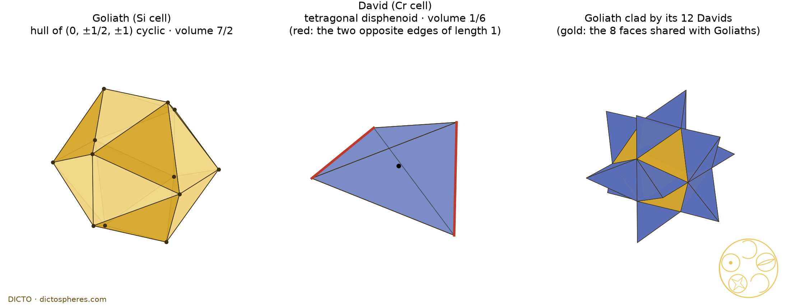

DRAFT for DICTO. Paper number #54 or #55 (DICTO decides; #54 was reserved for the gnomon paper, now on hold). Title is a working title: DICTO decides.
Theorem: in the A15 (Cr3Si) structure, the power diagram with weight difference 3/4 between the Si and Cr sites is exactly a face-to-face tiling of space by Goliath, the convex hull of Jessen's orthogonal icosahedron, and David, a tetragonal disphenoid, two Goliaths and six Davids per cubic cell.

The census of #53 walked a weight through A15 and noted, at 3/4, an icosahedron and a tetrahedron that fill space together. DICTO named them and proposed to follow this pairing first.
Paper #52 [2] showed that DICTO's two loops of space-filling pairs, the golden loop of #48 [4] and the Delian loop of #51 [3], are power diagrams of fixed sites of two kinds with one weight slid between the kinds. Paper #53 [1] did the same, exactly, for ten classical networks. In A15 the walk runs over −5/4 < λ < 5/4, λ = wSi − wCr, with flips at 1/4 and 3/4 [1, Table 2]. Up to 1/4 the family is Weaire and Phelan's [5, 6, 7]; at 3/4 the census recorded Si cells with 20 triangles and 12 corners of degree 5, and Cr tetrahedra [1, Corollary 5], but did not identify them. It was DICTO's idea to pursue this as the strongest new pairing of the census; DICTO named the pieces David and Goliath on 25 October 2026. The exact study is [S].
Each piece is the region that is nearer, in the weighted sense, to its own point than to any other point.
For sites ci with weights wi, the power cell of ci is the set of points p with |p − ci|² − wi ≤ |p − cj|² − wj for all j [8]. The cells are convex and tile space face to face. Two sites are bonded when their cells share a face. We use the units of #53: A15 in the cubic cell of edge 2, sites as in the Main theorem (space group Pm3̄n; Si on 2a, Cr on 6c), weights wSi = λ, wCr = 0. Jessen's orthogonal icosahedron [9] is the non-convex polyhedron with the 12 corners (0, ±1, ±2) and their cyclic permutations, whose dihedral angles are all right angles; we use its corner set scaled by 1/2.
Why: every corner of the tiling sits at the same weighted distance, 1/2, from four Si and four Cr points, and the two pieces exactly use up the volume of the cell.
Proof. The cells were computed in exact rational arithmetic [S, exact_a15.py → exact_a15.txt; checks/exact_pairs.py → exact_pairs.txt]: every corner is the intersection of three bisector planes and satisfies all the other inequalities exactly; faces, edges, edge lengths, degrees and volumes are then exact. The computation uses only the sites within squared distance 6 of the centre, so each computed cell contains the true cell. Two Si sites and six Cr sites per cubic cell, related by the symmetries of Pm3̄n (which permute the sites of each kind and keep the weights), give 2 cells congruent to Goliath and 6 congruent to David per cell; their volumes add to 2 · 7/2 + 6 · 1/6 = 8, the volume of the cubic cell, which the true cells fill exactly. A convex polytope containing another of the same volume equals it, so the computed cells are the true cells. (i)–(iii) are then read off; (iv) is a direct comparison of the 12 corners. As a hand check: the corner (0, 1/2, 1) has power exactly 1/2 to the Si sites (0, 0, 0), (0, 0, 2), (±1, 1, 1) (squared distances 5/4, minus 3/4) and to the Cr sites (±1/2, 0, 1), (0, 1, 1/2), (0, 1, 3/2) (squared distance 1/2), and power at least 2 to every other site [S]. ∎
λ = 3/4 is a flip of the walk [1]: there the Cr–Cr bonds (at squared distances 1 and 3/2) die and the Si–Si bonds along the cube axes (squared distance 4) are born, while the Si–Si bonds along the body diagonals (squared distance 3) have been present since 1/4. So at λ = 3/4 exactly, the bonds are Si–Cr and Si–Si at squared distance 3: David meets only Goliaths. It is not a switch point in the sense of #52 and #53.
Goliath is not a new shape: it is the icosahedron of twelve Cr atoms around each Si atom that crystallographers have drawn since 1958, turned a quarter turn, and its corners are Jessen's.
Corollary 1 (Goliath and the Z12 polyhedron). The 12 Cr sites nearest the Si site at (1, 1, 1) are exactly Goliath + (1, 1, 1). Hence Goliath is congruent to the Si-centred Z12 coordination icosahedron of A15 of Frank and Kasper [10, 11; 12]; around the Si site at the origin itself the Z12 icosahedron is the other pyritohedral setting, (±1/2, 0, ±1) cyclic, which is Goliath turned 90° about a cube axis. Likewise David + (1, 1, 1) is a tetrahedron of four Cr sites, an empty Cr4 tetrahedron of the structure. Exact [S, exact_pairs.txt].
Corollary 2 (the tiling is the classical picture, shifted). Translation by (1, 1, 1), half a body diagonal of the cubic cell, maps the Si sites onto Si sites and the Cr sites onto the 6d sites (the centres of the empty Cr4 tetrahedra), and back. Under it the David and Goliath tiling becomes the tiling of space by the Si-centred Cr12 icosahedra and the empty Cr4 tetrahedra, 2 + 6 per cell. Each such icosahedron is the union of the 20 SiCr3 tetrahedra of the A15 Delaunay complex at the Si site; this picture of A15 as a tetrahedrally close-packed structure is classical [10, 11, 12, 13, 14, 15]. The corners of the David and Goliath tiling are the 6d sites. We do not claim the tiling as new.
Corollary 3 (the A15 icosahedron is Jessen's convex hull). In fractional coordinates the twelve Cr around a Si are (±1/4, 0, ±1/2) and their cyclic permutations, which is the shape (0, ±1, ±2) cyclic up to scale and a quarter turn: the corner set of Jessen's orthogonal icosahedron [9]. So the Z12 Frank–Kasper polyhedron of A15 is, as a shape, the convex hull of Jessen's icosahedron. This follows at once from the coordinates; we state it because we did not find it stated in the sources searched (Section 7).
What is new here. Not found in the sources searched: (a) that the A15 weight walk lands exactly on this tiling, at λ = 3/4, with the cell corners on the 6d sites; the published walks stop at λ = 1/4 [5, 6, 7], and #53 [1] first computed the rest; (b) the plain statement of Corollary 3.
The same weight walks also produce well-known pairs. They do not add novelty, but each is one more instance of the same mechanism: two kinds of points, one weight, and at special weights a pair of simple convex pieces that fill space.
| Network (units) | λ | Pair (larger kind first) | Per cell | Credit |
|---|---|---|---|---|
| A15 (cell edge 2) | 3/4 | Goliath + David: Jessen hull (7/2) + tetragonal disphenoid (1/6) | 2 : 6 | this paper; stop found in #53 [1] |
| A15 (cell edge 2) | 0 | Weaire–Phelan cells: 14-faced (12 pentagons, 2 hexagons) + pentagonal dodecahedron; the weighted family runs up to the flip at 1/4 | 6 : 2 | Weaire and Phelan [5]; Kashyap and Neuhoff [6]; Sloane and Vaishampayan [7] |
| fluorite (octet edge 1) | −1/8 | the octet: regular octahedra + regular tetrahedra | 1 : 2 | classical [16]; the switch of the Delian loop, #51 [3], #52 [2] |
| CsCl (half cube edge 1) | ±1 | cuboctahedra + octahedra | 1 : 1 | classical [16]; the ends of the golden loop, #48 [4], #52 [2] |
| rock salt (Na–Cl distance 1) | ±(4 − 2√3) | equilateral chamfered cubes (6 squares, 12 hexagons; volume 137 − 78√3) + cubes (volume 78√3 − 135), every edge 2√3 − 3 | 4 : 4 | stop found in #53 [1]; the chamfered cube is classical; this face pattern at one point of the interval: Wang et al. [17] |
| zinc blende (cell edge 4) | ±1 | regular octahedra (edge 2√2) capped on 4 alternate faces (16 triangles; volume 40/3) + regular tetrahedra (edge 2√2; volume 8/3) | 4 : 4 | stop found in #53 [1]; a re-gluing of the octet (below) |
Table 1. Pairs of convex space-filling pieces at stops of the weight walks of #53 [1]. Volumes in the network's units; "per cell" counts pieces per cubic cell (fluorite, CsCl: per site of the larger kind). The rock salt and zinc blende rows are proved exactly here in arithmetic over ℚ(√3) [checks/exact_pairs.txt]; the others are exact in [1, 2].
Rock salt. At λ = 4 − 2√3 the Na cell has 6 squares (faces to the 6 nearest Cl) and 12 hexagons (faces to the 12 nearest Na), 32 corners and 48 edges, and the Cl cell is a cube; every edge of both has the same length 2√3 − 3, and the volumes add to 2, the share of one Na and one Cl in the cell of edge 2. At −(4 − 2√3) the roles of Na and Cl are exchanged. It is the rhombic dodecahedral honeycomb with its four-valent corners cut off into cubes, at the one cut where all edges are equal.
Zinc blende. At λ = 1 the Zn cell is a regular octahedron with corners at distance 2 from its Zn site along the cube axes, with flat caps on the four faces facing the four empty tetrahedral holes, the cap apices at those holes; the S cell is a regular tetrahedron. Edges: 12 octahedron edges of length 2√2 and 12 cap edges of length √3; 4 · 40/3 + 4 · 8/3 = 64, the cell. Each cap is one quarter of a regular tetrahedron (edge 2√2), cut from its centre. So the tiling is the octet honeycomb of edge 2√2 in which the tetrahedra around the empty holes are each split into four cones and the cones given to the neighbouring octahedra. At λ = −1, Zn and S exchange roles. We make no novelty claim for this description.
The same tool can be pointed at the relatives of A15.
The other Frank–Kasper phases, among them σ, Z and C15 (whose walk #53 computed [1]), are built from the same Z12, Z14, Z15 and Z16 coordination polyhedra [10, 11]; their weight walks, and walks with one weight per coordination type, are a natural place to look for further stops at which the cells become the coordination polyhedra or their hulls. The icosahedral order of these phases links them to quasicrystals and their periodic approximants [12, 18], and DICTO's long-term aim of bridging periodic and aperiodic order suggests following the Jessen hull into such approximants. In four dimensions, where polytetrahedral order is modelled on the 600-cell [12], the same weight walk could be run on four-dimensional point sets of two kinds. These are directions, not claims.
Known. Power diagrams and the regular subdivisions they are dual to [8]; Jessen's orthogonal icosahedron and its convex hull [9; 19, 20]; the A15 structure as tetrahedrally close-packed, with the Si-centred Z12 icosahedron and Cr-centred Z14 polyhedron [10, 11, 13, 14, 15], and polytetrahedral order in general [12]; the A15 weighted Voronoi family up to λ = 1/4 [5, 6, 7]; the octet and the cuboctahedron–octahedron honeycomb [16], and the chamfered cube; tilings of space by tetrahedra and octahedra [21, 22]; the weight walks of #53 [1] and the DICTONIC loops [2, 3, 4].
Not found in the sources searched (study file prior-art.md [S]: DICTO's reference library, about five web searches, Wikipedia and Polytope Wiki on Jessen's icosahedron, Crossref; on top of the search for #53): the A15 power diagram at λ = 3/4 as this tiling; the statement that the A15 Z12 polyhedron is Jessen's convex hull; any tiling of space by Jessen hulls and tetrahedra in the tiling literature [21, 22] or the Jessen literature [19, 20]. Pearson's and Shoemaker's crystallographic descriptions may state the icosahedron-plus-tetrahedron decomposition in words, and the works of Sinogowitz, Wells and Goldberg were not reached; "not found" is limited to the sources searched.
[1] DICTO, "The Global Web of Bonds: How Bonds Hand Over Across Crystal Networks", paper #53, DICTO DOI: 10.5281/zenodo.23631140 (2026).
[2] DICTO, "The Web of Bonds: How the DICTONIC Bonds Hand Over", paper #52, DICTO DOI: 10.5281/zenodo.23629252 (2026).
[3] DICTO, "The Delian Bond: Samson, Delilah and the Octet Between Kepler's Rhombic Dodecahedron and the Cube", paper #51, DICTO DOI: 10.5281/zenodo.23606828 (2026).
[4] DICTO, "The Golden Split: Icosahedra, Unborns and AXE Become Two Convex Space-Fillers", paper #48, DICTO DOI: 10.5281/zenodo.23596362 (2026).
[5] D. Weaire, R. Phelan, "A counter-example to Kelvin's conjecture on minimal surfaces", Philosophical Magazine Letters 69 (1994) 107–110, doi:10.1080/09500839408241577.
[6] N. Kashyap, D. L. Neuhoff, "On quantization with the Weaire–Phelan partition", IEEE Transactions on Information Theory 47 (2001) 2538–2543, doi:10.1109/18.945264.
[7] N. J. A. Sloane, V. A. Vaishampayan, "A Zador-like formula for quantizers based on periodic tilings", IEEE Transactions on Information Theory 48 (2002) 3138–3140, doi:10.1109/TIT.2002.805086; arXiv:math/0207146.
[8] F. Aurenhammer, "Power diagrams: properties, algorithms and applications", SIAM Journal on Computing 16 (1987) 78–96, doi:10.1137/0216006.
[9] B. Jessen, "Orthogonal icosahedra", Nordisk Matematisk Tidskrift 15 (1967) 90–96, JSTOR 24524998.
[10] F. C. Frank, J. S. Kasper, "Complex alloy structures regarded as sphere packings. I. Definitions and basic principles", Acta Crystallographica 11 (1958) 184–190, doi:10.1107/S0365110X58000487.
[11] F. C. Frank, J. S. Kasper, "Complex alloy structures regarded as sphere packings. II. Analysis and classification of representative structures", Acta Crystallographica 12 (1959) 483–499, doi:10.1107/S0365110X59001499.
[12] D. R. Nelson, F. Spaepen, "Polytetrahedral order in condensed matter", Solid State Physics 42 (1989) 1–90, doi:10.1016/S0081-1947(08)60079-X.
[13] W. B. Pearson, C. B. Shoemaker, "A system for the coding and generating of layered, tetrahedrally close-packed structures", Acta Crystallographica B 25 (1969) 1178–1183, doi:10.1107/S0567740869003694.
[14] C. B. Shoemaker, D. P. Shoemaker, "Concerning systems for the generating and coding of layered, tetrahedrally close-packed structures of intermetallic compounds", Acta Crystallographica B 28 (1972) 2957–2965, doi:10.1107/S0567740872007289.
[15] D. P. Shoemaker, C. B. Shoemaker, "Concerning the relative numbers of atomic coordination types in tetrahedrally close packed metal structures", Acta Crystallographica B 42 (1986) 3–11, doi:10.1107/S0108768186098671.
[16] J. H. Conway, H. Burgiel, C. Goodman-Strauss, The Symmetries of Things, A K Peters (2008).
[17] D. Wang, X. An, D. Gou, H. Zhao, L. Wang, F. Huang, "DEM construction of binary hard sphere crystals and radical tessellation", AIP Advances 8 (2018) 105203, doi:10.1063/1.5052478.
[18] A. Reddy, M. B. Buckley, A. Arora, F. S. Bates, K. D. Dorfman, G. M. Grason, "Stable Frank–Kasper phases of self-assembled, soft matter spheres", PNAS 115 (2018) 10233–10238, doi:10.1073/pnas.1809655115.
[19] I. Izmestiev, J.-M. Schlenker, "Infinitesimal rigidity of polyhedra with vertices in convex position", Pacific Journal of Mathematics 248 (2010) 171–190, doi:10.2140/pjm.2010.248.171.
[20] A. Bezdek, B. Carrigan, "On nontriangulable polyhedra", Beiträge zur Algebra und Geometrie 57 (2016) 51–66, doi:10.1007/s13366-015-0248-4.
[21] J. H. Conway, Y. Jiao, S. Torquato, "New family of tilings of three-dimensional Euclidean space by tetrahedra and octahedra", PNAS 108 (2011) 11009–11012, doi:10.1073/pnas.1105594108.
[22] R. Gabbrielli, Y. Jiao, S. Torquato, "Families of tessellations of space by elementary polyhedra via retessellations of face-centered-cubic and related tilings", Physical Review E 86 (2012) 041141, doi:10.1103/PhysRevE.86.041141.
[S] DICTO, David and Goliath study (studies/2026-10-25-david-goliath, commit e012944): README.md, exact_a15.py → exact_a15.txt (exact cells), cells.py (float cross-check), prior-art.md; and papers/2026-10-25-david-goliath/checks/exact_pairs.py → exact_pairs.txt (22 exact checks, 0 failed: Goliath and David face types and the shift by (1, 1, 1); rock salt at 4 − 2√3 and zinc blende at ±1 in ℚ(√3)).